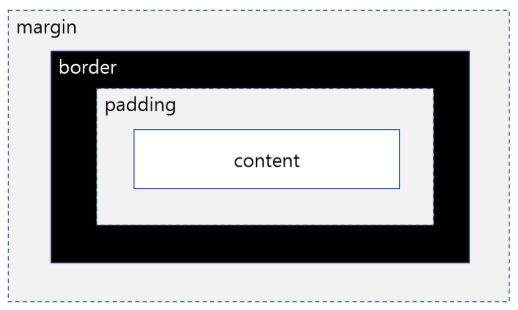
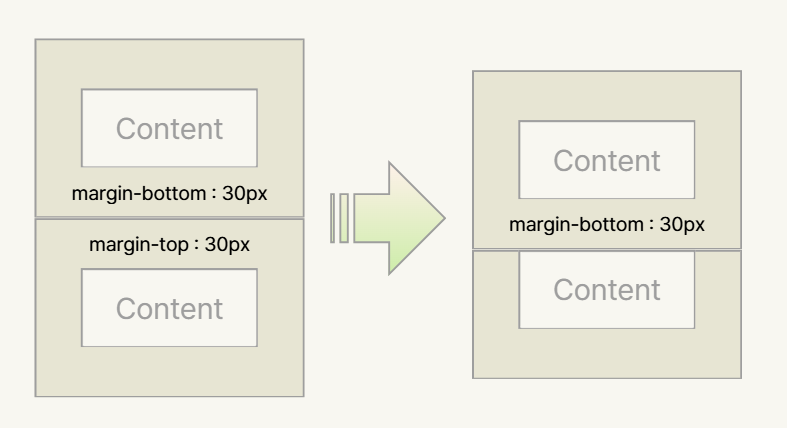
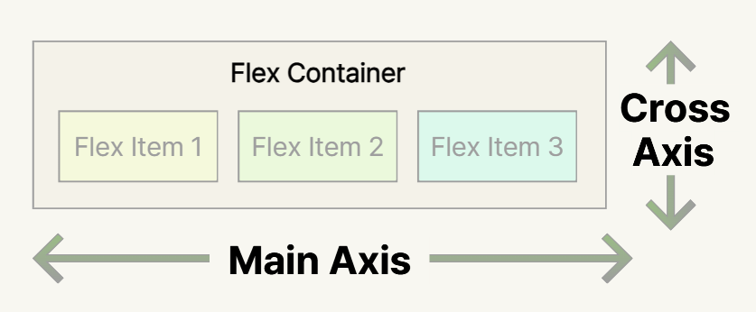
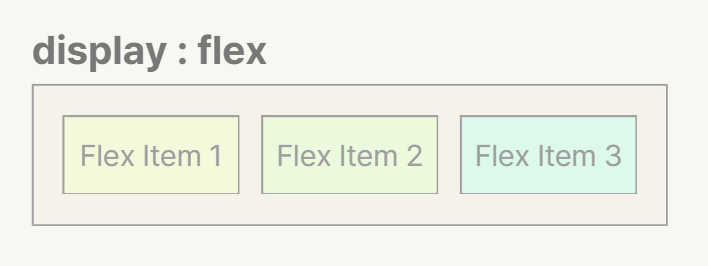
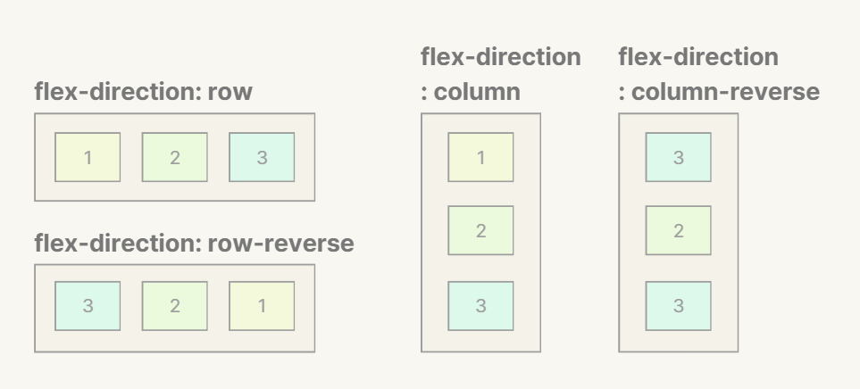
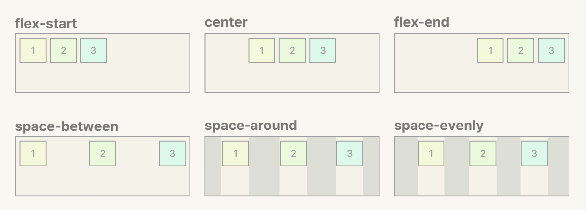
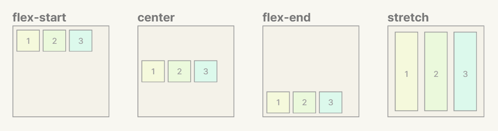
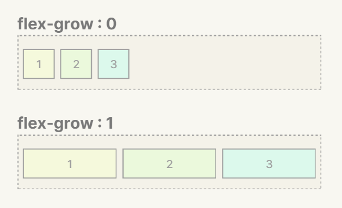

박스 모델
1.1 박스 모델 개요
- 웹 브라우저는 모든 HTML 태그를 네모난 박스로 취급합니다.
- 이 박스는 4개의 겹(Layer)으로 이루어져 있습니다.

1.2 Content (내용)
- 텍스트나 이미지가 들어가는 실제 알맹이입니다.
-
width와height가 적용되는 영역입니다.
div { width: 300px; /* 내용 영역의 너비 */ height: 200px; /* 내용 영역의 높이 */ }
1.3 Padding (안쪽 여백)
- 내용물과 테두리 사이의 공간입니다.
-
background-color는 padding 영역까지 칠해집니다.
div { /* 개별 지정 */ padding-top: 10px; padding-right: 20px; padding-bottom: 10px; padding-left: 20px; /* 축약형 — 상 우 하 좌 (시계방향) */ padding: 10px 20px 10px 20px; /* 축약형 — 상하 좌우 */ padding: 10px 20px; /* 축약형 — 모든 방향 동일 */ padding: 10px; }
1.4 Border (테두리)
- 박스의 경계선입니다.
div { /* 개별 지정 */ border-width: 1px; border-style: solid; /* solid, dashed, dotted, double, none */ border-color: black; /* 축약형 (가장 많이 사용) */ border: 1px solid black; /* 특정 방향만 */ border-bottom: 2px solid red; border-left: 3px dashed blue; /* 둥근 테두리 */ border-radius: 10px; /* 모든 모서리 */ border-radius: 50%; /* 원형 */ }
1.5 Margin (바깥 여백)
- 요소와 요소 사이의 여백 — 테두리 바깥의 공간입니다.
- 배경색이 적용되지 않는 투명한 공간입니다.
div { /* padding과 동일한 방식 */ margin-top: 20px; margin: 20px 10px; /* 상하 좌우 */ margin: 10px; /* 모든 방향 */ /* 가운데 정렬 (블록 요소) */ margin: 0 auto; }
1.6 마진 상쇄 (Margin Collapse)
두 블록 요소가 세로로 인접할 때, 위 요소의
margin-bottom과 아래 요소의
margin-top이 더 큰 값 하나로 합쳐집니다.

<div class="box1">박스1</div> <div class="box2">박스2</div> .box1 { margin-bottom: 30px; } .box2 { margin-top: 20px; } /* 실제 간격은 50px이 아닌 30px */
1.7 box-sizing 속성
-
기본적으로
width/height는 content 영역만의 크기입니다. - padding과 border를 추가하면 전체 크기가 커집니다.
div { width: 300px; padding: 20px; border: 10px solid black; } /* 실제 너비: 300+40+20 = 360px */
div { box-sizing: border-box; width: 300px; padding: 20px; border: 10px solid black; } /* 실제 너비: 300px 고정 */
box-sizing: border-box를 사용하면
width가 전체 크기(padding, border 포함)가 됩니다.
content 영역이 자동으로 줄어들어 크기 계산이 직관적입니다.
Flexbox
- Flexbox(Flexible Box)는 1차원 레이아웃을 위한 CSS 모듈입니다. 한 번에 가로 또는 세로, 한 방향의 배치만 다룹니다.
- 예전에는 float, position 등을 복잡하게 조합해야 했지만, Flexbox는 이런 문제를 해결하기 위해 등장한 1차원 레이아웃 시스템입니다.
- Flexbox 하나만 써도 웬만한 레이아웃은 커버 가능합니다.
간단한 속성 몇 줄로 복잡한 정렬을 구현합니다.
주축과 교차축으로 2방향 정렬을 자유롭게 제어합니다.
flex-wrap, flex-grow로 반응형 레이아웃을 간편하게 만듭니다.
아이템 순서 변경과 공간 분배가 자유롭습니다.
2.1 Flexbox 핵심 개념

display: flex를 적용하는 요소. 자식(Items)의 배치를 제어합니다.
Container 안에 직접 배치되는 자식 요소들입니다.
아이템이 배치되는 방향.
flex-direction으로 결정됩니다.
주축과 수직인 방향입니다.
Flexbox 주요 속성
3-1. 부모 속성
부모 요소에 다음의 속성들을 적용하여 자식 요소의 위치를 제어합니다.
- flexbox의 시작점입니다.
- 이것만으로 자식 요소들이 가로로 나란히 배치됩니다.

.container { display: flex; } <div class="container"> <div class="item">[1]</div> <div class="item">[2]</div> <div class="item">[3]</div> </div>
주축 방향 설정 — 아이템이 배치되는 방향을 결정합니다.

.container { display: flex; flex-direction: row; /* 기본값: 가로 방향 → */ /* flex-direction: row-reverse; 가로 역방향 ← */ /* flex-direction: column; 세로 방향 ↓ */ /* flex-direction: column-reverse; 세로 역방향 ↑ */ }
주축 정렬 — 아이템을 주축 방향으로 어떻게 배치할지 결정합니다.

.container { display: flex; justify-content: flex-start; /* 시작점 정렬 (기본값) */ /* justify-content: flex-end; 끝점 정렬 */ /* justify-content: center; 가운데 정렬 */ /* justify-content: space-between; 양끝 붙이고 균등 분배 */ /* justify-content: space-around; 각 아이템 주변 균등 여백 */ /* justify-content: space-evenly; 모든 간격 완전 균등 */ }
교차축 정렬 — 아이템을 교차축 방향으로 어떻게 정렬할지 결정합니다.

.container { display: flex; height: 200px; /* 높이가 있어야 효과가 보임 */ align-items: stretch; /* 늘려서 채움 (기본값) */ /* align-items: flex-start; 위쪽 정렬 */ /* align-items: flex-end; 아래쪽 정렬 */ /* align-items: center; 세로 가운데 정렬 */ }
줄바꿈 설정 — 아이템이 한 줄을 넘을 때 어떻게 처리할지 결정합니다.
.container { flex-wrap: nowrap; /* 한 줄에 모두 배치 (기본값) */ flex-wrap: wrap; /* 넘치면 다음 줄로 */ }
아이템 간격 — 아이템 사이의 공백을 한 번에 설정합니다.
.container { gap: 20px; /* 모든 방향 간격 */ gap: 20px 10px; /* 세로 가로 간격 */ row-gap: 20px; /* 행 간격만 */ column-gap: 10px; /* 열 간격만 */ }
| 속성 | 기본값 | 설명 |
|---|---|---|
| display: flex | — | Flexbox 활성화 |
| flex-direction | row | 주축 방향 설정 |
| justify-content | flex-start | 주축 정렬 |
| align-items | stretch | 교차축 정렬 |
| flex-wrap | nowrap | 줄바꿈 설정 |
| gap | 0 | 아이템 간격 |
3-2. 자식 속성
남는 공간을 얼마나 차지할지 비율을 정합니다.

<div class="container"> <div class="item item1">1</div> <div class="item item2">2</div> <div class="item item3">3</div> </div> .container { display: flex; background-color: #2c3e50; padding: 10px; gap: 10px; } .item { background-color: #d0d0bf; padding: 20px; text-align: center; font-weight: bold; } .item1 { flex-grow: 0; } .item2 { flex-grow: 0; } .item3 { flex-grow: 0; }
공간이 부족할 때 얼마나 줄어들지 비율을 정합니다.
.item { flex-shrink: 1; } /* 기본값: 줄어듦 */ .item { flex-shrink: 0; } /* 줄어들지 않음 (고정 크기 유지) */
아이템의 기본 크기를 설정합니다.
.item { flex-basis: auto; } /* 기본값: 콘텐츠 크기 */ .item { flex-basis: 200px; } /* 200px 기본 크기 */ .item { flex-basis: 30%; } /* 부모의 30% 기본 크기 */
flex-grow,
flex-shrink,
flex-basis를 한 번에 설정합니다.
/* flex: grow shrink basis */ .item { flex: 0 1 auto; } /* 기본값 */ .item { flex: 1; } /* flex: 1 1 0% (가장 자주 사용!) */ .item { flex: 2; } /* flex: 2 1 0% */ .item { flex: 1 0 200px; } /* 늘어나되, 줄지 않고, 기본 200px */
| 속성 | 기본값 | 설명 |
|---|---|---|
| flex-grow | 0 | 남는 공간 차지 비율 (0 = 늘어나지 않음) |
| flex-shrink | 1 | 부족한 공간 감소 비율 (0 = 줄어들지 않음) |
| flex-basis | auto | 아이템 기본 크기 |
| flex | 0 1 auto | grow + shrink + basis 단축 속성 |
실무에서는
flex: 1을 가장 자주 사용합니다. 모든 아이템에 적용하면
남은 공간을 균등하게 나눠 갖는 레이아웃이 됩니다.